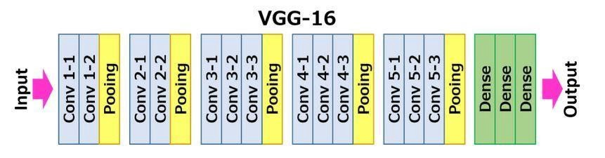
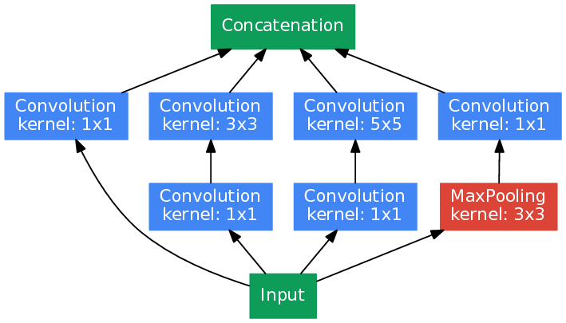

3.6. State of the art CNN models
Contents
3.6. State of the art CNN models#
In this section, we will discuss the following state of the art Convolutional neural network models:
LeNet-5
AlexNet
VGG-16
Inception V1 (GoogLeNet)
ResNet-50
All these models have made significant contribution to deep learning field. These models have made profound impact of image related tasks like image classification, object identification and localization, face recognition etc.
Image source: here
1. LeNet-5#
Lenet-5 is one of the earliest pre-trained models proposed by Yann LeCun and others in the year 1998, in the research paper Gradient-Based Learning Applied to Document Recognition. They used this architecture for recognizing the handwritten and machine-printed characters.
The main reason behind the popularity of this model was its simple and straightforward architecture. It is a multi-layer convolution neural network for image classification.
Model Architecture#

Image source: here
The input is images of size 28 × 28
C1 is the first convolutional layer with 6 convolution kernels of size 5 × 5.
S2 is the pooling layer that outputs 6 channels of 14 × 14 images. The pooling window size, in this case, is a square matrix of size 2 × 2.
C3 is a convolutional layer with 16 convolution kernels of size 5 × 5. Hence, the output of this layer is 16 feature images of size 10 × 10.
S4 is a pooling layer with a pooling window of size 2 × 2. Hence, the dimension of images through this layer is halved, it outputs 16 feature images of size 5 × 5.
F5 is the convolutional layer with 120 convolution kernels of size 5 × 5. Since the inputs of this layer have the same size as the kernel, then the output size of this layer is 1 × 1. The number of channels in output equals the channel number of kernels, which is 120. Hence the output of this layer is 120 feature images of size 1 × 1.
F6 is a fully connected layer with 84 neurons which are all connected to the output of F5.
The output layer consists of 10 neurons corresponding to the number of classes (numbers from 0 to 9).
Model Summary#
5 layers with learnable parameters.
The input to the model is a grayscale image.
It has 3 convolution layers, two average pooling layers, and two fully connected layers along with a softmax classifier output layer.
The number of trainable parameters are 60000.
2. AlexNet#
Alexnet won the Imagenet large-scale visual recognition challenge in 2012. The model was proposed in 2012 in the research paper named Imagenet Classification with Deep Convolution Neural Network by Alex Krizhevsky and his colleagues.
In this model, the depth of the network was increased in comparison to Lenet-5.
Model Architecture#

Image source: here
The input is images of size 227 × 227 × 3
Conv1 is the first convolutional layer with 96 convolution kernels of size 11 × 11 × 3 and a stride of 4 (p=0).
Pool1 is the first pooling layer of size 3 × 3 and a stride of 2.
Conv2 is the second convolutional layer with 256 convolution kernels of size 5 × 5 × 96 and a stride of 1 (p=2).
Pool2 is the first pooling layer of size 3 × 3 and a stride of 2.
Conv3 is the third convolutional layer with 384 convolution kernels of size 3 × 3 × 256 and a stride of 1 (p=1).
Conv4 is the fourth convolutional layer with 384 convolution kernels of size 3 × 3 × 384 and a stride of 1 (p=1).
Conv5 is the fifth convolutional layer with 256 convolution kernels of size 3 × 3 × 384 and a stride of 1 (p=1).
Pool5 is the first pooling layer of size 3 × 3 and a stride of 2.
6th and 7th layers are fully connected layers, each has 4096 neurons (ReLU activation).
8th and also last layer is a 1000 neurons softmax layer (output).
Note
Dimensions of the output are 55 × 55 × 96 after Conv 1, and 27 × 27 × 96 after Pool 1.
Dimensions of the output are 27 × 27 × 256 after Conv 2, and 13 × 13 × 256 after Pool 2.
Dimensions of the output are 13 × 13 × 384 after Conv 3
Dimensions of the output are 13 × 13 × 384 after Conv 4
Dimensions of the output are 13 × 13 × 256 after Conv 5, and 6 × 6 × 256 after Pool 5.
Model Summary#
It has 8 layers with learnable parameters.
The input to the Model is RGB images.
It has 5 convolution layers with a combination of max-pooling layers.
Then it has 3 fully connected layers (including the output layer).
The activation function used in all layers is Relu.
It used two Dropout layers.
The total number of parameters in this architecture are 62.4 million.
3. VGG-16#
VGG16 is a type of CNN (Convolutional Neural Network) that is considered to be one of the best computer vision models to date. The creators of this model evaluated the networks and increased the depth using an architecture with very small (3 × 3) convolution filters, which showed a significant improvement on the prior state of the art configurations.
It was used to win ILSVR(Imagenet) competition in 2014. The 16 in VGG16 refers to 16 layers that have weights. In VGG16 there are thirteen convolutional layers, five Max Pooling layers, and three Dense layers which sum up to 21 layers but it has only sixteen weight layers i.e., learnable parameters layer.
Model Architecture#

Image source: here
The input is images of size 224 × 224 × 3. The only preprocessing it does is subtracting the mean RGB values, which are computed on the training dataset, from each pixel.
Conv-1-X Layer has 64 number of filters, Conv-2-X has 128 filters, Conv-3-X has 256 filters, Conv 4-X and Conv 5-X has 512 filters.
Each convolution layer has 3x3 filter with stride 1 and always used the same padding and each maxpool layer has 2x2 filter of stride 2.
The two fully connected layers, each has 4096 neurons (ReLU activation)
The last layer is a 1000 neurons softmax layer (output).
Note
All of the hidden layers are equipped with rectification (ReLU) non-linearity.
Also, here one of the networks contains Local Response Normalization (LRN), such normalization does not improve the performance on the trained dataset, but usage of that leads to increased memory consumption and computation time.
Model Summary#
It has 16 layers with learnable parameters.
The input to the Model is RGB images.
It has 13 convolution layers with a combination of five max-pooling layers.
Then it has 3 fully connected layers (including the output layer).
The activation function used in all layers is ReLU.
The total number of parameters in this architecture are 138 million.
4. Inception V1 (GoogLeNet)#
The Inception is a deep learning model based on Convolutional Neural Networks, which is used for image classification.
When multiple deep layers of convolutions were used in a model it resulted in the overfitting of the data. To avoid this from happening the inception model uses the idea of using multiple filters of different sizes on the same level. Thus in the inception models instead of having deep layers, we have parallel layers thus making our model wider rather than making it deeper.
It is the winner of the ImageNet Large Scale Visual Recognition Competition in 2014, an image classification competition, which has a significant improvement over ZFNet (The winner in 2013), AlexNet (The winner in 2012) and has relatively lower error rate compared with the VGGNet (1st runner-up in 2014).
Model Architecture#

Image source: here
Idea of an Inception module:
Inception model uses the concept of an Inception Layer which is a combination of all those layers (namely, 1×1 Convolutional layer, 3×3 Convolutional layer, 5×5 Convolutional layer) with their output filter banks concatenated into a single output vector forming the input of the next stage.
Along with the above-mentioned layers, there are two major add-ons in the original inception layer:
1×1 Convolutional layer before applying another layer, which is mainly used for dimensionality reduction
A parallel Max Pooling layer, which provides another option to the inception layer.
Image source: here
Inception V1 (GoogLeNet) architecture has 22 layers in total! Using the dimension-reduced inception module, a neural network architecture is constructed. This is popularly known as GoogLeNet (Inception v1). GoogLeNet has 9 such inception modules fitted linearly. It is 22 layers deep (27, including the pooling layers). At the end of the architecture, fully connected layers were replaced by a global average pooling which calculates the average of every feature map. This indeed dramatically declines the total number of parameters.
Model Summary#
It has a total of 22 layers.
The total number of parameters in this network are 6.8 million where the majority of the parameters is due to the inception blocks of the network.
4. ResNet-50#
ResNet stands for Residual Network and is a specific type of convolutional neural network (CNN) introduced in the 2015 paper Deep Residual Learning for Image Recognition by He Kaiming, Zhang Xiangyu, Ren Shaoqing, and Sun Jian. CNNs are commonly used to power computer vision applications.
ResNet-50 is a 50-layer convolutional neural network (48 convolutional layers, one MaxPool layer, and one average pool layer). Residual neural networks are a type of artificial neural network (ANN) that forms networks by stacking residual blocks.
Convolutional Neural Networks have a major disadvantage — ‘Vanishing Gradient Problem’. During backpropagation, the value of gradient decreases significantly, thus hardly any change comes to weights. To overcome this, ResNet is used. It make use of skip connections.
Skip Connections#
Image source: here
As an overview, skip connections are connections in deep neural networks that feed the output of a particular layer to later layers in the network that are not directly adjacent to the layer from which the output originated.
When we introduce a skip connection that lets the initial \(x\) bypass all calculations in \(F(x)\).
Model Architecture#
Image source: here
The primary architectures that build on skip connections are ResNets and DenseNets.
Note
We have 16 residual blocks. Each residual block consists of 3 convolutional layers that transform the dimensionality of the data, as indicated in the illustration. The residual blocks form 4 groups.
The architecture takes a 224x224x3 image as input
A 7×7 kernel convolution alongside 64 other kernels with a 2-sized stride.
A max pooling layer with a 2-sized stride.
9 more layers—3×3, 64 kernel convolution, another with 1×1, 64 kernels, and a third with 1×1, 256 kernels. These 3 layers are repeated 3 times. This is the
first Residual block.12 more layers with 1×1, 128 kernels, 3×3, 128 kernels, and 1×1, 512 kernels, iterated 4 times. This is the
second Residual block.18 more layers with 1×1,256 cores, and 2 cores 3×3,256 and 1×1,1024, iterated 6 times. This is the
third Residual block.9 more layers with 1×1,512 cores, 3×3,512 cores, and 1×1,2048 cores iterated 3 times. This is the
fourth Residual block.
Lastly, the architecture performs global average pooling before feeding the feature map to a fully connected layer that distinguishes between the 1000 images used in the ImageNet database.
Model Summary#
It has a total of 50 layers.
It makes use of skip connection.
The total number of parameters in this network are ~23 million trainable parameters.